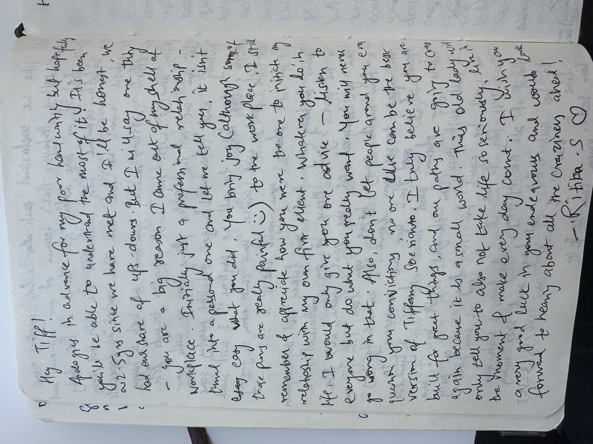
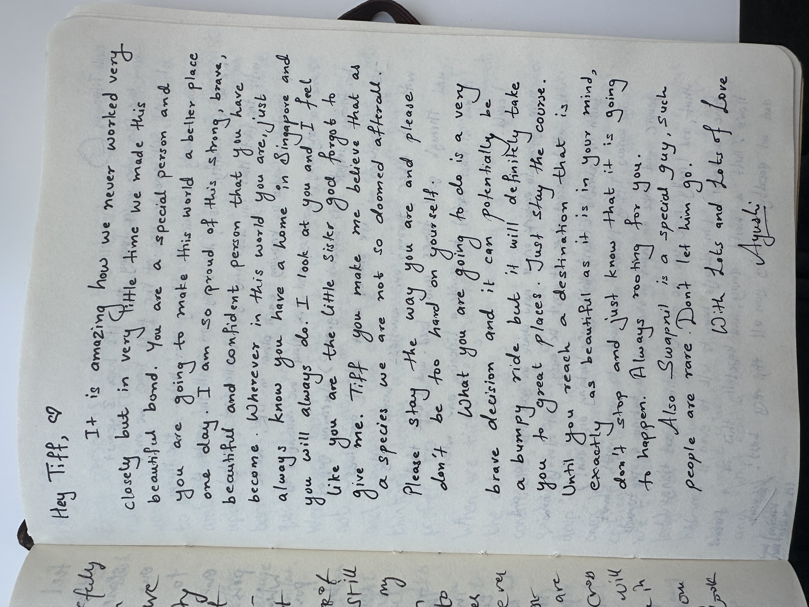

About Me
The vision of this website is to demonstrate my research, thought process and how i think.
I firmly believe we are aligned in terms of values and aptitude. In terms of skills, this my attempt to have a sense of what problems I could solve that is valuable to you.
What I’ve worked on
Five years of following my intellectual interests and attempting to monetize it — with experiments and honest failures along the way.
- Identified a gap in the AI infra market for hedge funds — a $255M gross revenue business with one incumbent and limited value-added reseller competition.
- Built industry conviction over 4 months of deep research, cold-calling, attending industry conferences, and connecting with leaders across AI infrastructure and quant research.
- Built TCO financial models for 10,000-H100 GPU clusters covering capex, opex, and unit economics.
- Benchmarked AI workloads on MetaX C500 GPUs (1 node, 8 GPUs, 64 GB vRAM each, CUDA-compatible stack).
- Optimized PyTorch scripts for inference on Llama-3.3-70B, Llama-3.2-1B, and Stable Diffusion v2.1 — hitting 27.1 token/s on the 70B.
- Supported the solutions-architect team; absorbed working knowledge of data center, server, and vendor economics.
- Ranked top quartile of the Asia analyst batch four years in a row; earned an early promotion.
- Generated >$1M in sales commission in 2024; helped move the Asia IRS franchise to Top 3 of 10 dealers.
- First in BofA Asia FICC to attempt a convolutional neural network — for USD/THB analysis. The model didn’t work; the insights from why it didn’t did.
- Produced daily macro commentary and trade ideas for hedge fund clients across HK, Singapore, London, and Helsinki.
- Built an internal RFQ-capture database that sales & traders still use for real-time analytics and pricing.
- 1st in cohort of 220 (Outstanding Student Award 2018) · Dean’s List · PolyU Full Entry Scholarship · WIE Scholarship.
- Sole recipient in Asia of a full travel + tuition scholarship ($7,000 USD).
- Top in the World, Cambridge AS Level Mathematics — highest standard mark globally.
- 4A* at A-Level · Maths 99 · Chemistry 95 · Physics 93 · Computer Science 90.
Reviews from Ex-Colleagues
The fullest portrait of how I work comes from the person who sat next to me on the trading floor for three years. Brooks wrote this on his own initiative when I told him I was leaving the bank.
Singapore, 049321
+65 6678 0288
“One of the most thoughtful, ambitious and original thinkers I’ve ever met.”
“She was many years ahead of schedule in being able to cover [these clients].”
“She poured out dozens of notebooks — every non-work hour spent on the math.”
To Whom It May Concern,
My name is Brooks Thompson. I run the macro sales team for Bank of America in Asia Pacific. I’ve been Tiffany Soerianto’s boss for the last 3 years and am very pleased to write a letter of recommendation on her behalf. Tiffany has been an absolute pleasure to work with these past few years and is one of the most thoughtful, ambitious and original thinkers I’ve ever met. She has an unbelievable level of curiosity and passion for whatever is put in front of her. She will be a tremendous credit to any school that gets her.
Tiffany has set herself apart from the beginning. Honestly, just getting an interview for a front office job at a leading bank would have been a long shot. The vast majority of interns we get every year come from a small handful of top 10 MBA programs in the US and Europe, and the top 5 or so campuses in India, China and Singapore. Tiffany was an undergraduate applying from the Hong Kong Polytechnic University, not really a school we typically recruit from. She impressed throughout the summer and ended up sitting next to me in Hong Kong on the emerging market rates sales desk.
Tiffany immediately impressed everyone on the trading floor with her intelligence, drive and willingness to put in the work. She was always one of the first to arrive and the last to leave, fully committing to her work and the team.
Tiffany has never been afraid to ask questions, challenge assumptions and change processes she saw as lacking. Soon after starting, she created an algorithm for sorting through our missed trades, which hadn’t been getting accounted for properly. To this day, she continues to approach me with strong ideas for improving systems and reducing inefficiency. She quickly met some of my own clients and made them her own, impressing clients in HK and Singapore as well as from London and even Helsinki. The level of clients she covered were very sophisticated, and she was many years ahead of schedule in being able to cover them.
About a year after she started, Tiffany invited me to a dinner of her ‘mentors’, myself and two other people that had been instrumental for her. I was absolutely shocked when I reached the dinner and found the long-time Asia CEO of a Big 5 accounting firm and the CFO of one of Hong Kong’s pre-eminent real estate development companies at the table. I still have no idea how a 23-year-old from a poor Indonesian village with no family connections had met these two business power hitters, and I was even more impressed that both of them took time out to have dinner with us on a random Tuesday evening.
Tiffany has continued to excel in her seat, achieving consistent high ratings. However, I knew also she was getting more and more drawn to machine learning and artificial intelligence. This past summer, she pulled me into an office and told me she wanted to quit. She theatrically poured out a bag of dozens of notebooks, explaining she was using all of her non-work hours to brush up on the mathematical equations that filled the pages. One of our global sales heads was in Hong Kong the following week and I made sure that she met Tiffany to see if there was anything meaningful we could find for her internally. She was completely impressed meeting Tiffany and hearing her story. I felt quite proud that she was on my team.
Ultimately, Tiffany convinced us that she really did need to go back to school to further her learning, though we convinced her to stay a few more months at the bank. It’s been a pleasure to get to know her, and there’s more to her than I’ve been able to cover in this letter. Come prepared with a lot of questions when you interview her!
Sincerely,
Brooks Thompson
Notes from colleagues
On my last day at the bank, the team passed around a notebook. Two of the entries say more about how I work — and how I’m wired — than anything I could write about myself.

“You are a big reason I came out of my shell at the workplace. You bring joy (although some of those puns are really painful) — listen to everyone, but do what you really want. No one else can be the best version of Tiffany Soerianto.”
— Ritika S.

“Tiff you make me believe that as a species we are not so doomed afterall”
— Ayushi
Two pages from a leaving notebook · Bank of America, Hong Kong → Singapore desk, April 2025